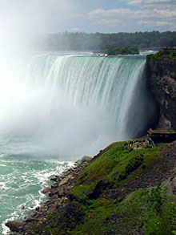

The Seven Wonders of Canada
The Canoe | The Igloo | Niagara Falls | Old Québec City | Pier 21, Halifax | Prairie Skies | The Rockies
Niagara Falls, Ontario
NIAGARA FALLS! Stupendous, beautiful,
Enduring monument of the Power Divine!
Thy white-foam pillars ever moving stand,
And ever standing move harmoniously
To the rough music of the dashing spray,
And roaring tumult of thy boiling base.
- From "Niagara Falls: A Poem in Three Cantos' by James K. Liston, 1843.
Born around 12,000 years ago, Niagara Falls is a set of massive waterfalls located on the Niagara River, on the border between Canada and the United States.
The Falls are comprised of three separate waterfalls: the Horseshoe Falls, the American Falls, and the smaller, adjacent Bridal Veil Falls. The crescent-shaped Horseshoe Falls is also known as the Canadian Falls as it is located mostly on the Canadian side of the border.
The residents of Niagara Falls were among the most passionate and vocal participants in the 7 Wonders of Canada project. After appearing on Sounds Like Canada and The National, Westlane Secondary student Becky Puddicombe became a local celebrity, receiving a job offer from the Niagara Parks Commission and the Key to the City from the mayor. One opinion piece in the Niagara Falls Review newspaper compared the CBC's selection process to the 2004 presidential election in Florida.